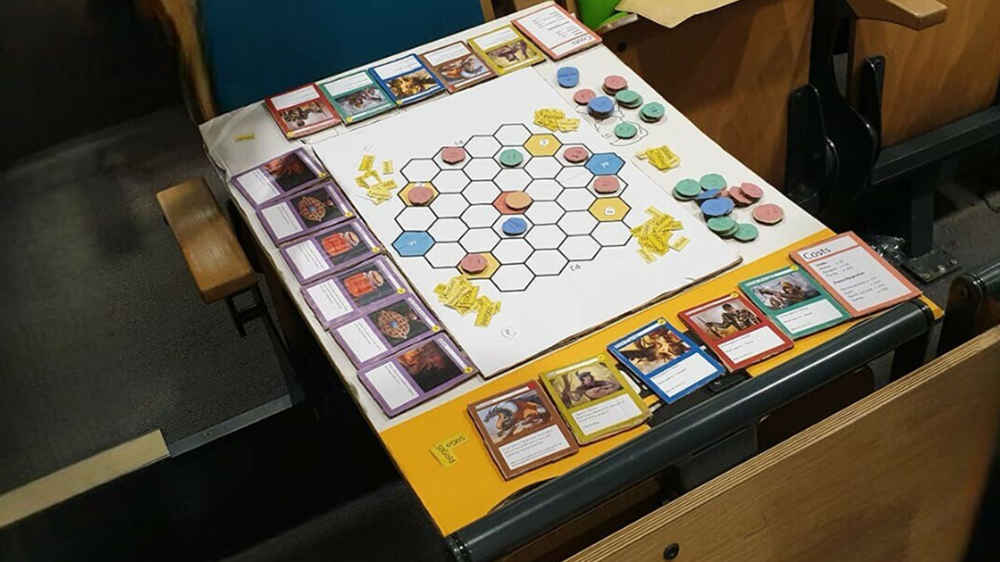

The design document was created to support the creation of a Twine game, which is an inspired take on 'Little Red Riding Hood' with a crime fiction twist.
The player impersonates the hunter, who in this case will be the detective of the story. They will have to gather all the evidence and finally make a dramatic final decision to blame the culprit.
The game will make use of some of the most popular narrative design techniques to present an experience that entertains the player solely through raw storytelling.
I conducted a research based on the League of Legends API, where I attempted to identify the various playstyles of the players who populate such games.
I examined the game through two lenses. One focuses on how their skill and experience in the game can affect their playstyle, while the other concentrates on player aggressiveness, comparing the intensity of experienced players to newcomers.
My colleague and I created a game called 'Mine Wars,' which is a turn-based strategy game. In this game, players compete in 1v1 matches to collect gold and defeat their opponent by capturing four mine locations. The players spend the gold, generated by the mines, to buy units and resources for the battle, which will be placed in a honeycomb-shaped terrain.
Additionally, there are special locations where players can gain additional tactical advantages, such as the mercenary base and the dragon pit. The combat is based on a rock-paper-scissors approach represented by the classes of the units.
The Fantastic Quest is a shoot 'em up game inspired by the classic King's Knight. Players have the option to choose from up to three different classes, each with unique stats and spells that impact gameplay. The main objective is to journey through various levels, culminating in a final battle against a formidable dragon boss.
This game offers a blend of shooter and RPG elements, requiring players to engage in combat while also leveling up important stats like attack, defense, and dexterity. This progression system provides players with a tangible sense of advancement throughout their adventure.